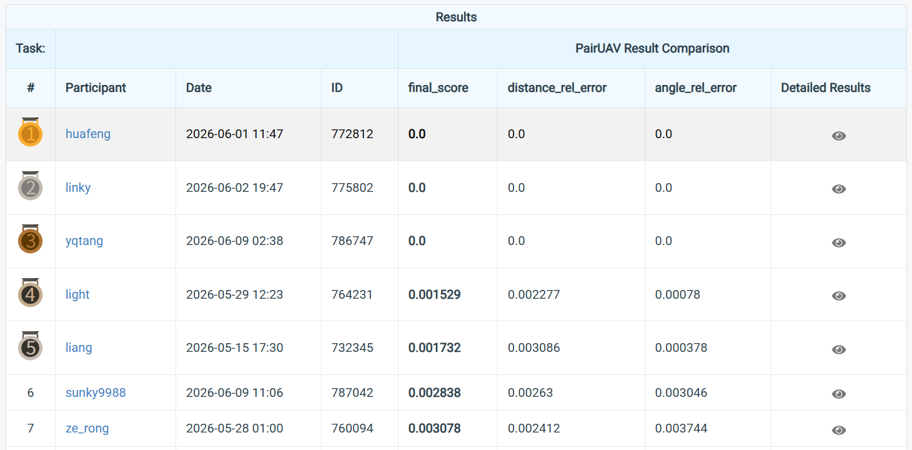

评价不可信
本地验证、public leaderboard、hidden official、smoke test 混在一起，弱证据容易被包装成强结论。
Hackathon Projection Page
面向 Kaggle / CodaBench 的冲榜决策系统：让 AI 不只是建议一个方法，而是维护规则锚定、强范式扫榜、结构创新、提交门控和榜单反馈。
Why It Matters
本地验证、public leaderboard、hidden official、smoke test 混在一起，弱证据容易被包装成强结论。
看到新模型就跑，缺少任务范式分类，也缺少 mainline / source / control / reject 的角色管理。
不值得交的结果也被打包，浪费提交机会，还会污染后续对路线和榜单反馈的判断。
Control Flow
工作流按 Agent Harness 方式推进：每一步都产出 spec、scoreboard、decision record 或 submission record。核心是让 agent 只能在证据足够时升级动作。
L1 Is The Core
L1 的目标不是“多试几个模型”，而是用统一证据面比较每条成熟路线的上限、成本和风险。
当前需要保护的 leaderboard anchor。它提供主路线和隐藏榜单证据，不随便被新路线覆盖。
提供 dense field、geometry field 和机制证据。它们可以指导结构创新，不等于直接提交。
bounded result 明显为红。它的价值是负例控制：证明 workflow 会停止坏路线。
Problem-Driven Innovation
Route Scoreboard
| Route | Role | Evidence Surface | Decision |
|---|---|---|---|
| Reloc3r official full-epoch | mainline | hidden official anchor, rank-1 screenshot | protect as leaderboard baseline |
| RoMa dense field | source | bounded dense correspondence signal | use as mechanism evidence |
| MASt3R / VGGT geometry field | control | geometry and distance signal | combine or hold |
| Reloc3r angle improvement | candidate | requires structural/spec gate | continue only through L2/L3 gate |
| GRelPose frozen head | reject | bounded result red | do_not_package |
Submission Gate
Evidence Chain

Closing